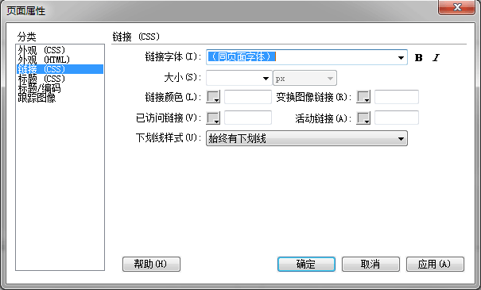
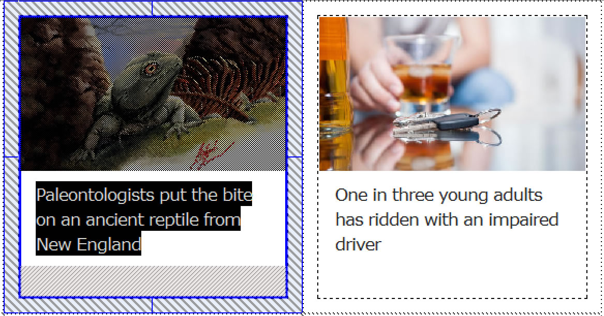
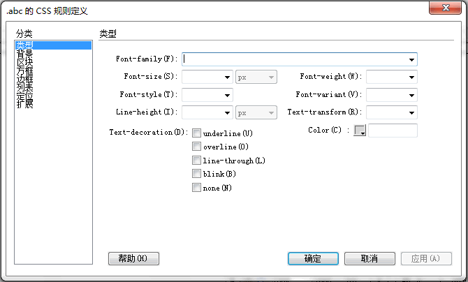
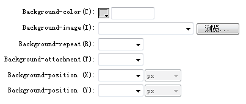
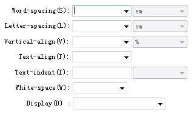
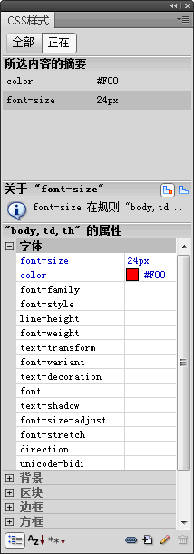
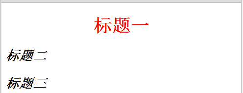
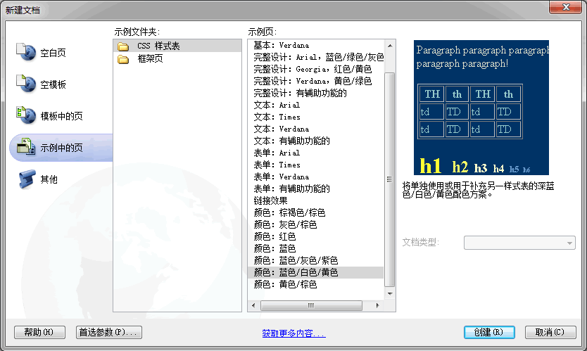

HTML+CSS
关于CSS
CSS是Cascading Style Sheet（层叠样式表）的缩写。
- 1997，W3C发布HTML4时同时公布CSS1
- 1998，CSS2发布
- 2010，CSS3发布
CSS是网页设计的新技术，大多浏览器都支持，但有不同的表现。它的作用是：
- 为网页上的元素精确定位
- 内容结构和格式控制相分离（html文件仅组织网页内容结构，css文件组织格式）
HTML+CSS
运用CSS样式的网页——百度免责声明CSS表述了页面内容内容的组织格式： 初步印象：
|
<head> |
网页使用CSS的好处
- 大大缩减页面代码，提高浏览速度；
- 结构清晰，容易被搜索引擎搜索到；
- 容易改版，通过修改css样式表文件，可实现成批网页的格式修改；
- 强大的字体控制和排版能力。
Div+CSS
div是HTML中的一个标签，可看作是一个容器，容放大块的内容。将div与css结合，可将内容与结构互相独立分离。

CSS设置网页属性
进入页面属性设置界面
每个网页编辑的第一个标准步骤：更改网页的基本设定：- 修改->页面属性（Ctrl+J）
- 属性面板->“页面属性”按钮
网页外观设置
通过页面属性->外观（CSS）对网页外观，包括背景、文字、颜色等进行设置。
| 属性 | 属性名 | 说明 |
| 页面字体 | font-family | 指定要用于网页的默认字体系列 |
| 大小 | font-size | 网页的默认字体大小，常用单位px、pt |
| 文本颜色 | color | 定义页面上文本的颜色 |
| 背景颜色 | background | 设置页面的背景颜色 |
| 背景图像 | background-image | 背景图像，属性值 url(图像地址) |
| 重复 | background-repeat | 确定图像重复与否，重复的方式 no-repeat、repeat、repeat-x、repeat-y |
| 左边距 | margin-left | 确定页边距的大小 常用单位px、pt、% |
| 上边距 | margin-top | |
| 右边距 | margin-right | |
| 下边距 | margin-bottom |
网页链接设置
通过页面属性->链接（CSS）对网页链接文字样式进行设置。
设置下划线的样式名为text-decoration，如text-decoration: none;
练习1：制作如下网页局部（占有效网面50%宽度，包括周边留白在内）全局参照耶鲁大学新闻页。


CSS设置文本属性
HTML格式设置标签可对网页中的文本进行设置，CSS样式对网页文本的设置更丰富和灵活。进入CSS规则定义界面
- 点击属性面板上CSS选项下<新CSS规则>-编辑规则 或者在CSS样式面板中新建
- 新建CSS规则下输入选择器名
- 在“CSS规则定义”窗口进行设置

CSS规则——类型
- Font-family：设置字体名
- Font-size：设置字体尺寸
- Font-style：设置字体风格
- Font-weight：设置字体的粗细
- Font-variant：设置英文的大小写转换
- Line-height：设置行高
- Text-transform：设置文本中单词的大小写方式
- Text-decoration：设置文本修饰
- Color：设置文本颜色
CSS规则——背景
|
 说明：
|
CSS规则——区块
|
 |
练习2：设计名为”.abc“的CSS样式，使得如下div标签能显示下面效果（高度200px），点击素材图片，另存下载。
<div class="abc">江南好，风景旧曾谙</div>

CSS设计与使用
CSS格式设置规则
CSS样式可由“规则定义窗口”或CSS面板生成。也可以直接编写代码设计。 CSS 格式设置由两部分组成：选择器和声明。
|
 | |
| selector { property1:value1; property2:value2; ... } |
h1 { |
|
CSS样式设计的代码应通过style标签放在网页文档的head部分。 HTML+CSS的基本格式： <html> |
||
CSS分类与使用
CSS样式有三种类型，可结合选择器selector名称识别。
标签选择器
选择器：直接将html中的标签作为选择器的名称。
使用：相当于标签的扩展定义，使用时直接运用标签即可。
| <style> h1{font-size:28pt;font-weight:bold;color:red; text-align:center;} h2,h3{font-size:20pt;font-style:italic;text-align:left;} </style> |
 |
类别选择器
选择器：由.打头命名，如： .text{ font-family:隶书; color:#ff00ff ;text-align:center;}
使用：在html文件的标签中标识class属性值的方式。class="类别选择器"
如：<p class="text">个人概况</p>
ID选择器
选择器：由#打头命名，如： #textid{ font-family:隶书; color:#ff00ff ;text-align:center;}
使用：在html文件的标签中标识id属性值的方式。id="id选择器"
如：<p id="textid">个人概况</p>
说明：

样式文件建立与运用*
CSS样式文件的建立
文件-->新建，选CSS空白页或示例中的样式表

CSS样式文件扩展名为.css。思考怎样用css样式处理如下问题：
- 网页字体和颜色的设置
- 网页背景图像的设置（备用背景色方案）
- 各种图像平铺方式的尝试
- 网页某区域文本的设置（字体、字体尺寸、行间距、字体风格、背景色等）
样式文件的运用
在Head部分，用style标签，导入css样式文件即可。
<style type="text/css">
<!--
@import url("../files/lesson-style.css");
-->
</style>
练习三：针对如下的新闻网页局部，设计合适的css样式，并仿制该部分网页。
延伸练习与研究
尝试制作完整网页。
| Last | Home | Next |
©2012-2018 Yang Peili. All rights reserved. contact me